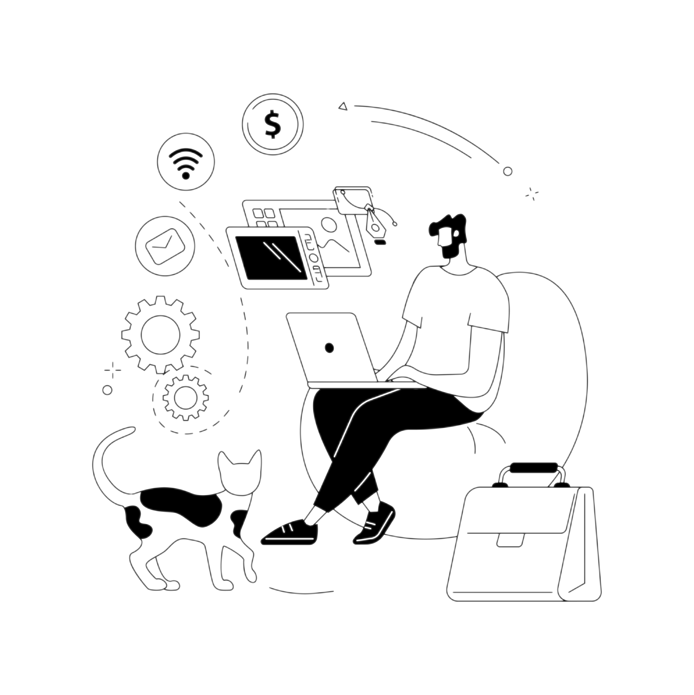

WinkiDev
Aqui, você vai descobrir os princípios, métodos e histórias que deram origem à Engenharia de Software moderna.
Explore nossa Wiki e entenda como ideias se transformam em sistemas que movem o mundo digital.

Aqui, você vai descobrir os princípios, métodos e histórias que deram origem à Engenharia de Software moderna.
Explore nossa Wiki e entenda como ideias se transformam em sistemas que movem o mundo digital.